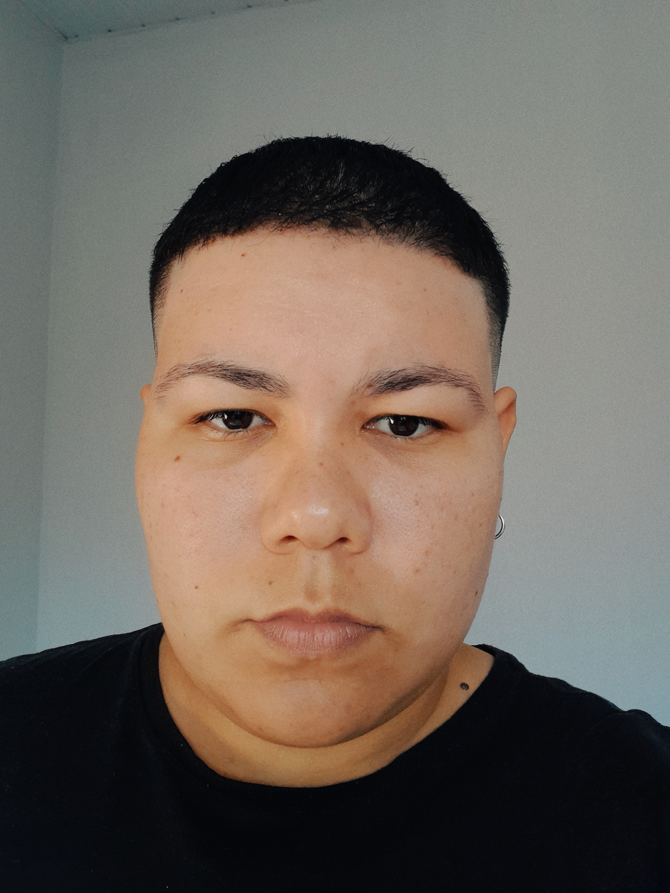

Portfólio Pessoal
Desenvolvido como projeto prático para a disciplina de Desenvolvimento de Aplicações Web I.
Estudante do 4º período de Análise e Desenvolvimento de Sistemas.

Estudante do 4º período de Análise e Desenvolvimento de Sistemas. Estou construindo minha trajetória na área de tecnologia.
Tenho interesse em desenvolvimento web, criação de interfaces, programação, banco de dados e análise de sistemas.
Durante a graduação, venho tendo contato com tecnologias como HTML, Java, Python e SQL, buscando entender diferentes áreas e descobrir aquelas com as quais mais me identifico.
Desenvolvido como projeto prático para a disciplina de Desenvolvimento de Aplicações Web I.
Aplicativo de saúde em desenvolvimento como projeto pessoal e projeto integrador.